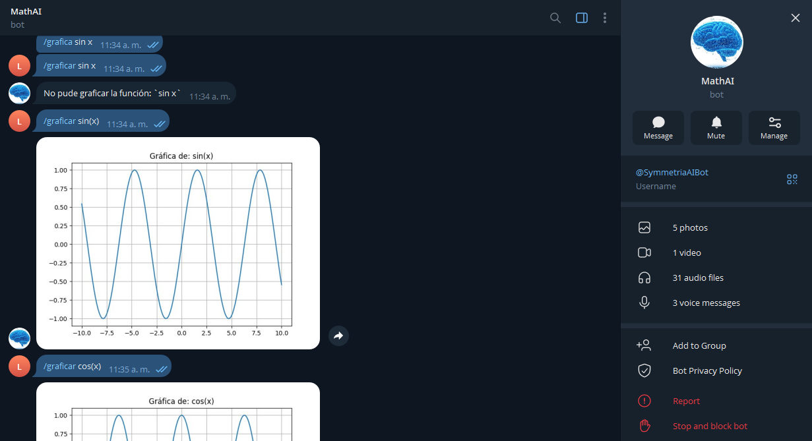
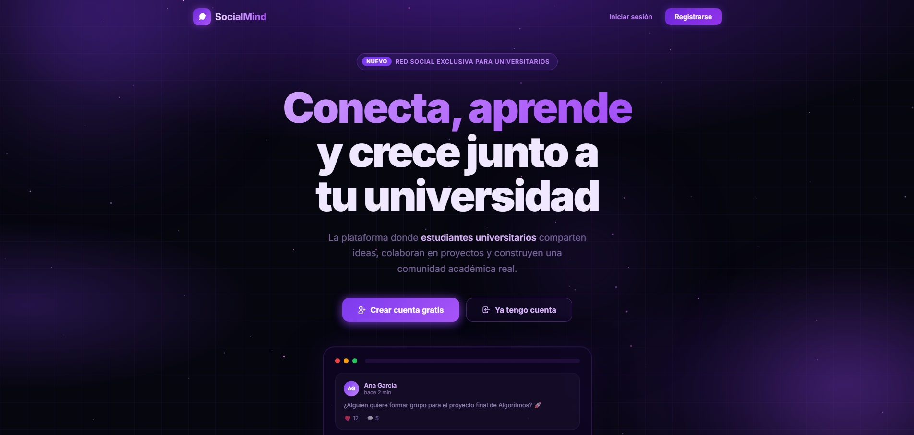
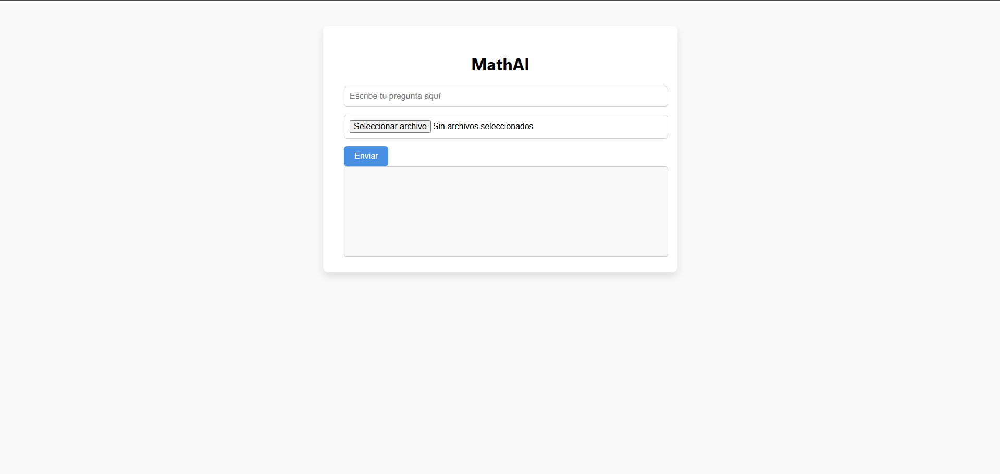
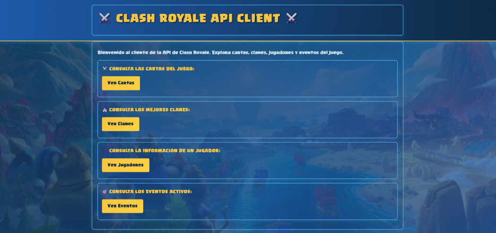
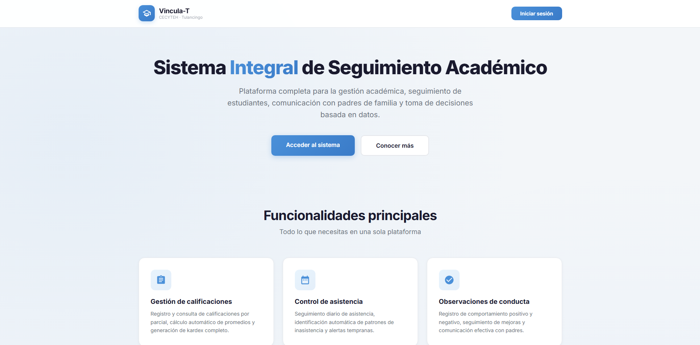

Perfil con foco en
arquitectura backend y APIs REST
Experiencia construyendo servicios con FastAPI y Flask, aplicando programacion orientada a objetos,
procesamiento de solicitudes HTTP e integracion de servicios externos.
Actualmente estudio en la Universidad Tecnologica de Tulancingo y busco contribuir en proyectos reales.
Tecnologias para desarrollo web y backend
Lenguajes y herramientas usadas en mis proyectos: Python y Java, FastAPI y Flask, PostgreSQL, MySQL, SQLite, Git y GitHub, Linux CLI, conceptos REST, HTTP, JSON y MVC.
Python y Java
Solida base en programacion para construir logica de negocio, resolver problemas y mantener codigo claro y reutilizable.
FastAPI y Flask
Construccion de APIs REST, manejo de endpoints y estructuracion de servicios backend para aplicaciones web.
Bases de datos y APIs
Experiencia con PostgreSQL, MySQL y SQLite, consumo e integracion de APIs externas en proyectos funcionales.
Proyectos destacados

MathAI
Aplicacion web para resolver ejercicios matematicos con IA. Integra Groq API, envio de prompts e imagenes y entrega soluciones paso a paso.

SocialMind
Red social orientada a estudiantes con gestion de usuarios, publicaciones y grupos, operaciones CRUD e integracion de filtrado con IA.

MathAI-Telegram
Bot de Telegram para resolver ejercicios con IA. Procesa texto, imagen y audio, y responde en multiples formatos para uso rapido.

ClashRoyaleAPIClient
Aplicacion web para consultar cartas, jugadores y clanes mediante API oficial, con procesamiento de datos para visualizacion simple.

VinculaT
Sistema académico para detectar riesgo de deserción escolar mediante seguimiento de calificaciones, asistencias, alertas y notificaciones. Desarrollado con FastAPI, Flask, PostgreSQL, Groq, Firebase y Docker.